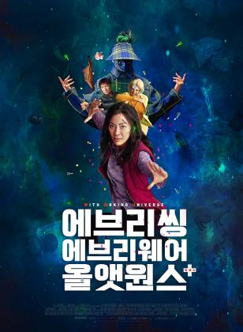
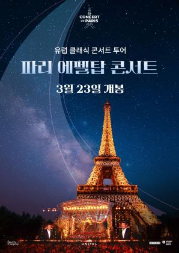
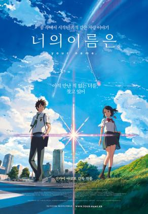
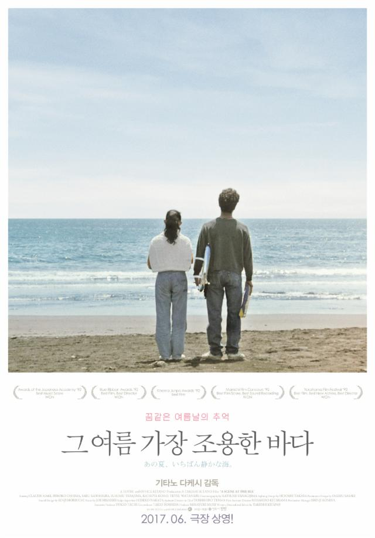
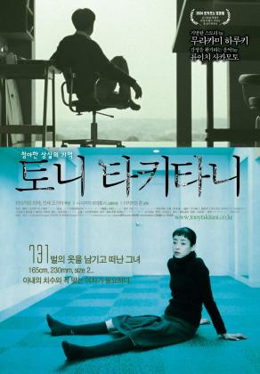

전체영화
125개의 영화가 검색되었습니다.
-
-
 1
1

 “이 근처에 폐허 없니? 문을 찾고 있어”
규슈의 한적한 마을에 살고 있는 소녀 ‘스즈메’는
문을 찾아 여행 중인 청년 ‘소타’를 만난다.
그의 뒤를 쫓아 산속 폐허에서 발견한 낡은 문.
‘스즈메’가 무언가에 이끌리듯 문을 열자 마을에 재난의 위기가 닥쳐오고
가문 대대로 문 너머의 재난을 봉인하는 ‘소타’를 도와 간신히 문을 닫는다.
“닫아야만 하잖아요, 여기를!”
재난을 막았다는 안도감도 잠시,
수수께끼의 고양이 ‘다이진’이 나타나 ‘소타’를 의자로 바꿔 버리고
일본 각지의 폐허에 재난을 부르는 문이 열리기 시작하자
‘스즈메’는 의자가 된 ‘소타’와 함께 재난을 막기 위한 여정에 나선다.
“꿈이 아니었어”
규슈, 시코쿠, 고베, 도쿄
재난을 막기 위해 일본 전역을 돌며 필사적으로 문을 닫아가던 중
어릴 적 고향에 닿은 ‘스즈메’는 잊고 있던 진실과 마주하게 되는데…
관람평 8.9
“이 근처에 폐허 없니? 문을 찾고 있어”
규슈의 한적한 마을에 살고 있는 소녀 ‘스즈메’는
문을 찾아 여행 중인 청년 ‘소타’를 만난다.
그의 뒤를 쫓아 산속 폐허에서 발견한 낡은 문.
‘스즈메’가 무언가에 이끌리듯 문을 열자 마을에 재난의 위기가 닥쳐오고
가문 대대로 문 너머의 재난을 봉인하는 ‘소타’를 도와 간신히 문을 닫는다.
“닫아야만 하잖아요, 여기를!”
재난을 막았다는 안도감도 잠시,
수수께끼의 고양이 ‘다이진’이 나타나 ‘소타’를 의자로 바꿔 버리고
일본 각지의 폐허에 재난을 부르는 문이 열리기 시작하자
‘스즈메’는 의자가 된 ‘소타’와 함께 재난을 막기 위한 여정에 나선다.
“꿈이 아니었어”
규슈, 시코쿠, 고베, 도쿄
재난을 막기 위해 일본 전역을 돌며 필사적으로 문을 닫아가던 중
어릴 적 고향에 닿은 ‘스즈메’는 잊고 있던 진실과 마주하게 되는데…
관람평 8.9
-
스즈메의 문단속
예매율 29.9%
개봉일 2023.03.08
예매

-
-
 2
전국 재패를 꿈꾸는 북산고 농구
부 5인방의 꿈과 열정, 멈추지 않
는 도전을 그린 영화
관람평 9.5
2
전국 재패를 꿈꾸는 북산고 농구
부 5인방의 꿈과 열정, 멈추지 않
는 도전을 그린 영화
관람평 9.5
-
더 퍼스트 슬램덩크
예매율 22.7%
개봉일 2023.01.04
예매
-
-
 3
“날도 더웠고 수업도 지루했고.. 그렇게 졸리고 나른하던 날에 너를 처음 만났어”
1998년, 처음 만났다
“누굴 좋아하면 용기내야 된대”
2004년, 첫사랑이 생겼다
“몰랐어? 나 원래 이렇게 살아”
2010년, 각자 어른이 되어간다
“가장 그리운 건…너였어”
2014년, 흔적을 따라간다
“이젠 니 얼굴을 그리고 싶어. 사랑없인 그릴 수조차 없는 그림 말이야”
지금, 그리움을 그리다
2023년 3월 15일, 당신의 소울메이트가 찾아옵니다.
관람평 9.1
3
“날도 더웠고 수업도 지루했고.. 그렇게 졸리고 나른하던 날에 너를 처음 만났어”
1998년, 처음 만났다
“누굴 좋아하면 용기내야 된대”
2004년, 첫사랑이 생겼다
“몰랐어? 나 원래 이렇게 살아”
2010년, 각자 어른이 되어간다
“가장 그리운 건…너였어”
2014년, 흔적을 따라간다
“이젠 니 얼굴을 그리고 싶어. 사랑없인 그릴 수조차 없는 그림 말이야”
지금, 그리움을 그리다
2023년 3월 15일, 당신의 소울메이트가 찾아옵니다.
관람평 9.1
-
소울메이트
예매율 14.3%
개봉일 2023.03.15
예매
-
-
4
분노한 신들, 혼돈의 세상 진정한 슈퍼히어로가 깨어난다 신들의 힘을
갖게 된 빌리(애셔 앤젤)와 친구들은 각자의 방법으로 슈퍼히어로의 삶을 즐기게 된다.
그러던 그들 앞에 잃어버린 힘을 되찾고자 그리스 여신 헤스헤스페라(헬렌 미렌)와 칼립소(루시 리우)가 나타나게 되고, 세상은 혼돈에 빠지게 되는데…
관람평 8
-
샤잠! 신들의 분노
예매율 7.3%
개봉일 2023.03.15
예매
-
-
 5
모두를 공포에 몰아넣은 하루…
비행기 불시착은 시작에 불과했다!
평소와 다를 것 없던 어느 날,
기장 ‘토렌스’는 비행기 운행 중 거대한 폭풍우를 만나 정체모를 섬에 불시착한다.
살아남았다는 기쁨도 잠시, 비행기를 탈취하려는 무장단체의 인질극이 시작되고
토렌스는 탑승객 중 가장 피해야 할 의문의 살인범 ‘가스파레’와 손을 잡고
승객들과 함께 탈출을 시도하는데…
무장단체의 표적은 단 하나, 토렌스와 탑승객들!
목숨을 건 위험한 탈출 작전이 시작된다!
관람평 8
5
모두를 공포에 몰아넣은 하루…
비행기 불시착은 시작에 불과했다!
평소와 다를 것 없던 어느 날,
기장 ‘토렌스’는 비행기 운행 중 거대한 폭풍우를 만나 정체모를 섬에 불시착한다.
살아남았다는 기쁨도 잠시, 비행기를 탈취하려는 무장단체의 인질극이 시작되고
토렌스는 탑승객 중 가장 피해야 할 의문의 살인범 ‘가스파레’와 손을 잡고
승객들과 함께 탈출을 시도하는데…
무장단체의 표적은 단 하나, 토렌스와 탑승객들!
목숨을 건 위험한 탈출 작전이 시작된다!
관람평 8
-
플레인
예매율 6.5%
개봉일 2023.03.15
예매
-
-

6
미국에 이민와 힘겹게 세탁소를 운영하던 에블린은
세무당국의 조사에 시달리던 어느 날 남편의 이혼 요구와 삐딱하게 구는
딸로인해 대혼란에 빠진다. 그 순간 애블린은 멀티버스 안에서 수천, 수만의
자신이 세상을 살아가고있다는 사실을 알게 되고,그 모든 능력을 빌려와 위기의 세상과 가족을 구해야 하는 운명에 처한다.
관람평 9.1
-
에브리씬 에브리웨어 올앳원스+
예매율 2.3%
개봉일 2023.03.01
예매
-
-
7
“몰랐나? 원래 세상은 더럽고, 인생은 서럽다.”
1992년 부산, 밑바닥 정치 인생을 끝내고 싶은 만년 국회의원 후보 ‘해웅’.
‘해웅’은 이번 선거에서만큼은 금뱃지를 달 것이라 확신했지만,
정치판을 뒤흔드는 권력 실세 ‘순태’에게 버림받으며 지역구 공천에서 탈락한다.
“누가 센 지는 손에 뭘 쥐고 있는가 보라 안 했습니까?”
‘순태’에 의해 짜여진 선거판을 뒤집기 위해 부산 지역 재개발 계획이 담긴 대외비 문서를 입수한 ‘해웅’.
행동파 조폭 ‘필도’를 통해 선거 자금까지 마련한 ‘해웅’은 무소속으로 선거판에 뛰어들어 승승장구한다.
‘순태’ 역시 ‘해웅’이 가진 대외비 문서의 존재를 알게 되고, 점차 ‘해웅’의 숨통을 조여오는데…
대한민국을 뒤집을 비밀 문서,
이 판을 뒤집는 놈이 대한민국을 뒤집는다!
관람평 8
-
대외비
예매율 1.7%
개봉일 2023.03.01
예매
-
-

8
파리의 야경, 에펠탑을 빛낼 화려한 불꽃놀이와 함께 즐기는 클래식 선율
고티에 카퓌송, 알리사 사라 오트 등 클래식 스타 총출동
[공연 정보]
- 공연명칭 : 파리 에펠탑 콘서트 2022 (한글자막 제공)
- 상영일시 : 2023년 3월 23일 ~ 4월 1일 (목요일, 토요일)
- 예매오픈 : 2023년 3월 2일 오전 10시
- 상영지점 : 더 부티크 목동현대백화점, 상암월드컵경기장, 성수, 센트럴, 코엑스, 남양주,
부천스타필드시티, 분당, 킨텍스, 하남스타필드, 영종, 청추사창, 대전신세계 아트앤사이언스
대구신세계, 대구이시아, 마산, 부산대, 양산증산
- 러닝타임 : 100분 / 인터미션 없음
- 공연장소: 프랑스 파리 마르스 광장 Paris Champ de Mars
- 오케스트라: 프랑스 국립 오케스트라 L'Orchestre National de France
- 지휘: 크리스티안 마첼라루 Cristian Măcelaru
- 아티스트:
나딘 시에라 Nadine Sierra [소프라노], 레아 데잔드레 Lea Desandre [메조 소프라노], 어윈 슈로트 Erwin Schrott [바리톤], 스타니슬라스 드 바베리아크 Stanislas de Barbeyrac [테너]
- 솔리스트:
알리스 사라 오트 Alice Sara Ott [피아니스트], 고티에 카퓌송 Gautier Capucon [첼리스트], 레오니다스 카바코스 Leonidas Kavakos [바이올리니스트]
[콘서트 소개]
낭만의 도시 프랑스 파리에 8인의 클래식 스타가 한 자리에 모였다. 국내외 클래식계에 이름을 떨치고 있는 천재 피아니스트 알리스 사라 오트, 바이올리니스트 레오니다스 카바코스, 첼리스트 고티에 카퓌송과 그의 음악 파트너 제롬 뒤크로, 성악가 어윈 슈로트가 출연한다. 또한 떠오르는 성악 스타들이 부르는 다채롭고도 친숙한 아리아가 에펠탑 아래에서 펼쳐진다. 관객들은 흐르는 음악의 선율을 맑은 낮, 붉은 노을이 지는 저녁부터 빛나는 밤까지 즐긴다.
[주요 프로그램]
- 베르디 라 트라비아타 1막 중 ‘SEMPRE LIBERA’ (언제까지나 자유롭게)
- 그리그, 피아노 협주곡 EDVARD GRIEG : CONCERTO POUR PIANO
- 코른골트, 바이올린 협주곡 ERICH WOLFGANG KORNGOLD : CONCERTO POUR VIOLON
- 웨스트 사이드 스토리 중 ‘TONIGHT’
관람평 0
-
[유럽 클래식 투어] 파리 에펠탑 콘서트
예매율 1.3%
개봉일 2023.03.23
예매
-
-
9
오늘, 인생의 친구가 절교를 선언했다 아일랜드의 외딴 섬마을
'이니셰린'. 주민 모두가 인정하는 절친 '파우릭'(콜린 파렐)과
'콜름'(브렌단 글리슨)은 하루도 빠짐없이 함께 술을 마시며 수다를
떨 정도로 다정하고 돈독한사이다.
어느 날, 돌연 ‘파우릭’에게 절교를 선언하는 ‘콜름’.
절교를 받아들일 수 없는 ‘파우릭’은 그를 찾아가 이유를 묻지만
돌아오는 건 변심한 친구의 차가운 한마디 – “그냥 이제 자네가 싫어졌어”.
관계를 회복해 보려 할수록 상황은 더욱 악화되어 가기만 하고
평온했던 그들의 일상과 마을은 점점 파국으로 치닫는데…
예고 없이 찾아온 절교 선언, 평온했던 삶이 뜨겁게 타오른다!
관람평 0
-
이니셰린의 밴시
예매율 1%
개봉일 2023.03.15
예매
-
-
10
"붉은 달이 뜨던 밤, 폐쇄병동에서 스스로 탈출한
'모나'(전종서)는 화려한 조명에 이끌려 도착한 낯선 도시에서
자신의 특별함을 알아챈 기묘한 사람들을 만난다.
모나의 능력으로 일확천금을 꿈꾸는 댄서 '보니'(케이트 허드슨)
모나한테 첫눈에 반한 로맨티스트 DJ '퍼즈'(에드 스크레인)
모나에게 락 스피릿을 가르친 11살의 소울메이트 '찰리'(에반 휘튼)
그리고 모나를 뒤쫓는 언럭키한 경찰 '해롤드'(크레이그 로빈슨)까지
완벽한 밤… 완전한 자유? 완성된 운명!
새로운 세상으로 향하는 '모나'의 모험이 펼쳐진다."
-
모나리자와 블러드문
예매율 0.8%
개봉일 2023.03.22
예매
-
-
11
청소년기 심리와 행동으로 본 살인마의 탄생 배경
사건의뢰 범죄 전문가들에게 듣는 “범죄 수사와 범죄 심리 분석” 이야기
[강연 정보]
- 강연일시 : 23년 03월 19일(일) 오전 11시
예매오픈 : 23년 02년 27일(월) 오후 5시
- 강연자 : 염건령 교수
- 강연장소 : 메가박스 신촌지점
- 강연시간 : 110분
* 본 프로그램은 영화 속 범죄들을 다루는 강연으로 청소년은 관람이 불가합니다.
* 영화를 상영하거나 영화 내용을 설명하는 프로그램이 아니므로 예매 전 유의 부탁드립니다.
* 강연 3일전 ~ 1일전 취소 및 환불 시 수수료가 10% 발생되며, 당일 취소는 불가 합니다.
** 관람 고객 전원에게 상영관 입장 전.후 굿즈(수사 키트)와 사건개요 핸드아웃을 제공합니다.
출력된 티켓을 제시해 주셔야 굿즈 수령이 가능합니다.
[강연 주제]
당신의 친구는 좋은 사람인가?
세계에서 가장 악명높은 연쇄살인범 제프리 다머의 고등학교 시절
그의 청소년기 심리와 행동으로 본 괴물 살인마가 탄생하게 된 원인과 환경 분석
[시놉시스]
17명의 남성을 살해한 희대의 연쇄살인마 제프리 다머의 고등학교 시절을 그린 영화. 고등학생 제프리는 산성용액에 동물의 사체를 녹여 뼈를 수집하는 등 죽음에 집착하는 모습을 보인다. 불안정한 가정환경과 힘겨운 학교생활로 제프리의 폭력적인 충동은 점점 커져만 가고, 그 욕망은 살인에 대한 욕망으로 이어진다.
-
[사건 읽는 영화관] 내친구 다머:연쇄살임범의 탄생
예매율 0.8%
개봉일 2023.03.19
예매
-
-
12
타임슬립을 반복하며 첫사랑을 구하려는 소녀의 이야기
관람평 7.4
-
네가 떨어뜨린 푸른 하늘
예매율 0.7%
개봉일 2023.02.08
예매
-
-
13
“네가 얼마나 놀라운 사람인지 알려주고 싶었어”
272kg의 거구로 세상을 거부한 채 살아가는 대학 강사 ‘찰리’는
남은 시간이 얼마 없음을 느끼고
오랫동안 만나지 못한 10대 딸 ‘엘리’를 집으로 초대한다.
그리고, 매일 자신을 찾아와 에세이 한 편을 완성하면 전 재산을 주겠다고 제안한다.
관람평 8.6
-
더 웨일
예매율 0.7%
개봉일 2023.03.01
예매
-
-
14
여행을 끝내고 월요일 귀국을 알린 엄마의 영상통화
그리고 마중 나간 딸
그러나 엄마가 사라졌다
경찰에 도움을 요청하지만, 결정적인 단서들이 나오지 않는 가운데
딸 ‘준’은 엄마의 흔적을 찾기 위해
엄마가 방문한 호텔의 CCTV, 같이 간 지인의 SNS,
거리뷰 지도까지 온라인에 남아있는 모든 흔적을 검색하는데…
이번에는 딸이 사라진 엄마의 흔적을 검색하다!
관람평 8.8
-
서치 2
예매율 0.6%
개봉일 2023.02.22
예매
-
-

15
아직 만난 적 없는 너를, 찾고 있어
천년 만에 다가오는 혜성
기적이 시작된다
도쿄에 사는 소년 ‘타키’와 시골에 사는 소녀 ‘미츠하’는
서로의 몸이 뒤바뀌는 신기한 꿈을 꾼다
낯선 가족, 낯선 친구들, 낯선 풍경들...
반복되는 꿈과 흘러가는 시간 속, 마침내 깨닫는다
우리, 서로 뒤바뀐 거야?
절대 만날 리 없는 두 사람
반드시 만나야 하는 운명이 되다
서로에게 남긴 메모를 확인하며
점점 친구가 되어가는 ‘타키’와 ‘미츠하’
언제부턴가 더 이상 몸이 바뀌지 않자
자신들이 특별하게 이어져있었음을 깨달은
‘타키’는 ‘미츠하’를 만나러 가는데...
잊고 싶지 않은 사람
잊으면 안 되는 사람
너의 이름은?
관람평 9.1
-
너의 이름은.
예매율 0.6%
개봉일 2021.09.09
예매
-
-
16
나딘 시에라, 스티븐 코스텔로, 루카 살시의 환상적인 조합!
오페라 지휘자로 명성을 굳힌 다니엘레 칼레가리의 역동적 음악 속에
베르디 음악의 가장 깊은 감동을 확인할 수 있다!
[상영 정보]
상영지점 : 센트럴, 코엑스, 분당, 부천스타필드시티, 킨텍스, 대구이시아, 양산라피에스타, 전주혁신
상영일정 : 2023년 3월 21일(화) ~ 4월 30일(일) / 화요일, 일요일 *지점별로 상영요일이 상이
러닝타임 : 166분 *인터미션 없음
[공연정보]
제작년도 : 2022년 11월 5일
작곡 : 베르디 (Verdi)
지휘 : 다니엘레 칼레가리 (Daniele Callegari)
출연 :
나딘 시에라(비올레타 발레리), Nadine Sierra (Violetta Valéry) / [소프라노]
스티븐 코스텔로(알프레도 제르몽), Stephen Costello (Alfredo Germont) / [테너]
루카 살시(조르조 제르몽), Luca Salsi (Giorgio Germont) / [바리톤]
[작품 소개]
자신을 희생하는 코티잔, 영원히 사랑 받는 오페라의 히로인인 비올레타 역은 소프라노 나딘 시에라가 맡는다. 베르디의 인기 높은 비극을 마이클 메이어가 생동감 넘치게 연출한 이번 공연에서는 테너 스티븐 코스텔로가 이기적인 남자주인공 알프레도로 출연한다. 바리톤 루카 살시는 비올레타를 거부하는 알프레도의 아버지 제르몽으로 무대에 오르며 거장 다니엘레 칼레가리가 지휘봉을 잡는다.
[시놉시스]
비올레타는 코르티쟌으로서 불안한 삶이 지쳐 있었다. 한 파티에서 그녀는 알프레도를 소개받고, 그는 비올레타에게 빠져든다. 그의 솔직하고 성실한 모습에 감동을 받지만 그녀는 자신의 삶에 이러한 감정은 가질 수 없다며 그의 사랑을 거부한다. 결국 비올레타는 알프레도를 선택하고, 그들은 교외의 한 시골에서 사랑하며 살아간다. 그러던 어느 날 알프레도는 비올레타가 자신의 재산을 팔아 살아갈 수밖에 없다는 것을 깨닫고는 돈을 구하기 위해 파리로 떠난다.
그가 떠난 사이 그의 부친 제르몽이 비올레타를 찾아와 아들과 헤어지기를 요구한다. 비올레타는 편지를 남겨둔 채 떠나고, 돌아온 알프레도는 남겨진 편지를 읽고 비올레타의 배신에 복수하겠다고 분노한다.
-
[오페라] 라 트라비아타
예매율 0.6%
개봉일 2023.03.21
예매
-
-

17
청소부 일을 하는 시게루는 어느날 버려진 서핑보드를 줍는다. 그 이후로 그의 유일한 친구인 소녀와 함께 서핑을 하기 위해 바닷가로 향한다. 서핑 팀과 축구 부원들이 바라보는 가운데 혼자서 서툰 방법으로 서핑을 연습하던 중, 그의 보드가 부서져버린다. 가격이 비싸 다시 장만하기를 망설이던 그는 쓰레기 청소를 한 돈으로 새 보드를 다시 갖게 되고, 본격적으로 서핑을 하게 된다. 그를 비웃으며 바라보던 축구부원들도 그를 따라 서핑을 시작하게 되고 서핑 팀의 제의로 서핑대회의 참가신청을 하게 되는 등, 그를 바라보는 시선이 점차 달라지게 된다. 그가 서핑을 할 때면 항상 바닷가에서 옷가지들을 단정히 정리하던 여자 친구는 어느 날 시게루가 다른 여자와 함께 앉아 있는 것을 보게 되고 토라지지만, 그러한 갈등 뒤 다시 예전의 상태로 돌아가 함께 바다로 나간다. 그러나, 비가 내리던 어느날 먼저 가서 서핑을 하는 그를 찾아 바닷가에 온 여자 친구는 더 이상 그 곳에서 그의 모습을 찾을 수 없게 된다. 그가 사라진 뒤의 주변의 일상과 반응들을 타인의 시선으로 무심히 보여주는 화면 다음으로, 여자 친구는 둘 사이의 추억을 담은 사진 한 장을 서핑보드에 붙인 채 그가 있을 바닷가로 띄워 보내는데...
관람평 9.1
-
그 여름 가장 조용한 바다
예매율 0.5%
개봉일 2017.06.17
예매
-
-

18
고독이 일상이던 남자, 토니 타키타니,
토니 타키타니는 외로운 유년시절을 보냈다. 일찍이 어머니가 돌아가시고 아버지도 재즈 연주로 항상 집을 비우는 가운데 토니는 오히려 ‘혼자 있는 것’이 편하다는 것을 깨달았다. 그는 미술을 전공하면서 주변사람에게 항상 “너의 그림에는 감정이 결여되었다.”는 말을 들었지만 그에게 있어 ‘감정’이란 비논리적이고 미성숙한 것일 뿐이었다.
참한 쇼퍼홀릭과 사랑에 빠지다!
정교한 일러스트레이터로서 확실한 재능을 보인 그는 어느 날 아담한 체구에 단정하고 아름다운 미소를 지닌 에이코란 여성에게 불현듯 마음을 뺏겨 결혼에까지 이른다. 그의 삶은 변화했고, 난생 처음으로 생의 떨림을 맛보았으며 ‘다시 외로워진다는 것’을 두려워하게 되었다. 하지만 에이코에게는 유명 디자이너의 옷들을 구매하는 충동을 억누르지 못하는 한 가지 문제점이 있었다. 그녀의 쇼핑에 대한 집착은 점점 커져 스스로 감당하기 힘든 지경에 이르고, 토니는 걱정이 되어 그러한 충동을 억제해 보는 게 어떻겠냐고 넌지시 얘기해보았다. 하지만 그 결과는 비극적이었다.
165cm, 230 mm, size 2 의 여자가 필요해…
다시 혼자가 된 토니는 멍하니 앉아 아내가 남긴 옷장을 멍하니 바라보다가 너무도 아름다운 옷들이 마치 그녀의 유령을 보는 듯 하여 괴로움에 빠진다. 토니는 결국 아내와 완벽히 일치하는 치수를 가진 여성을 모집한다는 신문 광고를 내게 되고 그의 광고를 보고 한 여인이 찾아오는데…
-
토니 타키타니
예매율 0.5%
개봉일 2023.03.18
예매
-
-
19
관람평 8.1
-
파벨만스
예매율 0.5%
개봉일 2023.03.14
예매
-
-
 20
아바타: 물의 길은 판도라 행성에서
'제이크 설리'와 '네이티리'가 이룬 가족이 겪게 되는 무자비한 위협과
살아남기 위해 떠나야 하는 긴 여정과 전투,
그리고 견뎌내야 할 상처에 대한 이야기를 그렸다.
월드와이드 역대 흥행 순위 1위를 기록한 전편 아바타에 이어
제임스 카메론 감독이 13년만에 선보이는 영화로,
샘 워싱턴, 조 샐다나, 시고니 위버, 스티븐 랭, 케이트 윈슬렛이 출연하고
존 랜도가 프로듀싱을 맡았다.
관람평 9.4
20
아바타: 물의 길은 판도라 행성에서
'제이크 설리'와 '네이티리'가 이룬 가족이 겪게 되는 무자비한 위협과
살아남기 위해 떠나야 하는 긴 여정과 전투,
그리고 견뎌내야 할 상처에 대한 이야기를 그렸다.
월드와이드 역대 흥행 순위 1위를 기록한 전편 아바타에 이어
제임스 카메론 감독이 13년만에 선보이는 영화로,
샘 워싱턴, 조 샐다나, 시고니 위버, 스티븐 랭, 케이트 윈슬렛이 출연하고
존 랜도가 프로듀싱을 맡았다.
관람평 9.4
-
아바타: 물의 길
예매율 0.4%
개봉일 2022.12.14
예매
더보기